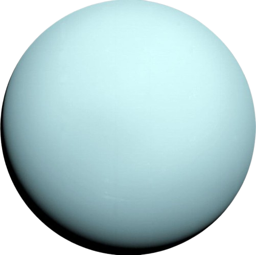

Urano
Urano es un gigante helado que gira casi de lado, lo que provoca estaciones extremas que duran muchos años.
Datos importantes
- Distancia al Sol: 2.9 mil millones de km
- Duración del año: 84 años terrestres
- Tiene 27 lunas
- Su color azul se debe al metano en su atmósfera